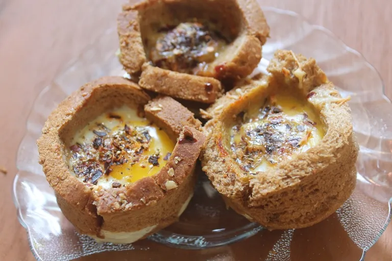

Ingredients
- 6 slices wholegrain bread
- 15g butter
- 3 eggs
- ½ cup milk
- 1 tsp chives
- ½ tomato
- Salt & pepper
- Parsely
Method
- Collect equipment and ingredients.
- Preheat oven to 180°C.
- Cut crusts off bread and soften butter.
- Spread butter evenly over the 6 slices.
- Place each slice, buttered side down into a large muffin tray.
- In a large bowl, whisk eggs, milk, salt and pepper.
- Put spray oil into a large frying pan and cook egg on a medium heat until scrambled.
- Slice tomato and chop chives.
- Fill bread cases with scrambled egg.
- Top with tomato and cheese, garnish with parsley.
- Bake in oven for 5-10mins or until cheese hasmelted.
- Remove cups from oven with two oven mitts.
- Allow to cool slightly then remove and garnish with parsley.
Finished product

Video tutorial